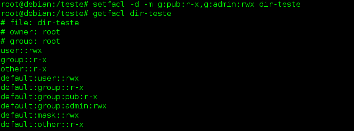

◉ ACL – Access Control List – Como configurar permissões avançadas no Linux
Uma ACL (Access Control List / Lista de Controle de Acesso) é uma configuração de segurança que nos fornece um controle mais refinado sobre
quais usuários podem acessar os diretórios do sistema e arquivos específicos do que as permissões tradicionais do Linux.
Usando as ACLs, podemos especificar as formas nas quais cada um dos usuários podem acessar um diretório ou um arquivo.
As ACLs podem reduzir um pouco a performance de um sistema, por isso é recomendável não ativá-las em sistemas de arquivos que armazenem
arquivos de sistema, nos quais as permissões tradicionais do Linux são mais que suficientes. Recomendamos, por exemplo, que você tenha a
partição /home separada e que ative as ACLs nesta partição.
Uma ACL é composta por uma série de regras. Uma regra especifica como um usuário ou grupo pode acessar o arquivo onde a ACL está sendo
aplciada.
Existem dois tipos de ACLs: regras de acesso (access ACLs) e regras padrão (default ACLs). Uma regra de acesso especifica informações
de acesso para um único arquivo ou diretório. Já uma regra padrão é aplicada apenas a diretórios, e especifica informações de acesso
padrões para todos os arquivos no diretório que não possuam uma ACL explícita aplicada.
Para estudarmos as ACLs vamos montar um disco extra em nosso sistema, no diretório /teste. Assumimos que o disco já foi particionado e
formatado anteriormente.
É necessário também instalar o pacote e habilitar as ACLs na partição. Geralmente os sistemas de arquivos ext2, ext3 e ext4 suportam as
ACLs, e devemos ativá-las montando o dispositivo com a opção acl (a opção no_acl é o padrão!).
Trabalhando com as ACLs no Linux
Podemos verificar se um sistema de arquivos montado possui suporta à ACLs emitindo o seguinte comando (supondo o sistema montado em
/dev/sda1):
# tune2fs -l /dev/sda1
Veja a opção de ACL disponível na linha “Default mount options:“.
Também é necessário verificar se os utilitários para ACL estão instalados no sistema. Para isso, execute o comando a seguir:
# dpkg --list | grep acl
Em meu caso, tanto os utilitários quanto as bibliotecas de acl estão instalados no sistema. Caso contrário, podemos instalá-los emitindo
o comando a seguir (sistemas devian e derivados):
# apt-get install acl
Após particionar e formatar o disco, vamos montá-lo ativando a opção de ACL:
# mount -t ext4 -o acl /dev/sdb1 /teste
Podemos também ativar as ACLs em um disco adicionando a opção acl ao arquivo /etc/fstab.
Vamos acessar a partição e criar um arquivo para testes nela:
# cd /teste
# vi arq1
Agora vamos ver as permissões de acesso ao arquivo usando o comando ls -l:
# ls -l
Vamos verificar as ACLs do arquivo usando agora o comando getfacl:
# getfacl arq1
Quando usamos esse comando, algumas informações mostradas são as mesmas retornadas por ls -l.
As primeiras três linhas da saída de getfacl constituem o cabeçalho; elas especificam o nome do arquivo, seu proprietário e o grupo ao
qual ele está associado.
Na linha que inicia com user, os símbolos :: indicam que a linha especifica as permissões do proprietário do arquivo. De forma análoga,
a linha group:: indica as permissões do grupo associado ao arquivo, e a linha other::, as permissões dos outros. Nenhum nome pode ser
associado a other.
Podemos adicionar ou modificar regras de permissões ao arquivo usando o comando setfacl com a opção –modify (ou -m), com a sintaxe a seguir:
# setfacl -m ugo:nome:permissões lista-de-arquivos
Onde:
u = ajusta permissão de um usuário qualquer
g = ajusta permissão de um grupo qualquer
o = ajusta permissão de todos os outros usuários
nome = nome do usuário ou grupo para o qual iremos ajustar as permissões
permissões = permissões no modo simbólico ou numérico (absoluto)
lista-de-arquivos = lista de arquivos aos quais as permissões serão aplicadas.
O comando setfacl é como uma espécie de chmod para acls.
Ao especificarmos permissões para os outros usuários (others), devemos omitir o parâmetro nome no comando.
As permissões simbólicas usam as letras r, w, x para representar as permissões de arquivo, ao passo que as permissões absolutas usam um
número octal (de 0 a 7).
Vamos a um exemplo. O arquivo arq1 será configurado para ter as seguintes permissões: Usuário proprietário: rw
Grupo do arquivo: rw
Outros: sem permissão nenhuma
Usuário fabio: somente leitura
Veja que com o esquema de permissões padrão do Linux não conseguiríamos aplicar esse conjunto de permissões da forma como necessitamos.
Se o usuário fabio for membro do grupo do arquivo, terá permissão rw, e se for “outro” usuário, não terá permissão alguma. Vamos usar
então a ACL para dar essa permissão a ele. Primeiramente, damos as permissões comuns usando chmod:
# chmod 660 arq1
# ls -l
Agora, ajustamos a permissão de fabio usando o comando setfacl:
# setfacl -m u:fabio:r arq1
E verificamos o resultado com getfacl:
# getfacl arq1
Veja que agora o usuário fabio aparece na saída do comando getfacl, com a permissão r (leitura) definida.
Vamos conferir a saída do comando ls -l agora:
# ls -l
Note que há agora um sinal de adição (+) ao lado das permissões do arquivo. Esse é um flag que indica permissões definidas por ACL
neste arquivo.
Podemos configurar regras de ACL para mais de um usuário ao mesmo tempo usando o comando setfacl. Por exemplo, vamos dar as permissões rwx
para o usuário fabio e somente leitura (r) para a usuária sofia. Para isso, separamos as configurações de cada usuário com uma vírgula:
# setfacl -m u:fabio:rwx,u:sofia:r-- arq1
E podemos ver o resultado com getfacl:
# getfacl arq1
Também podemos aplicar regras de acl a um grupo específico usando a opção g, como por exemplo um grupo de nome admins:
# setfacl -m g:admins:rwx arq1
Ou ainda aplicar as regras de acl a mais de um arquivo simultaneamente, separando seus nomes por espaços em branco:
# setfacl -m g:admins:rwx arq1 arq2
Podemos remover as regras de ACL de um usuário ou grupo com a opção -x. Esta opção não age sobre o proprietário do arquivo ou sobre o
grupo associado ao arquivo.
Vamos remover a permissão de leitura que foi atribuída à usuária sofia no arquivo arq1:
# setfacl -x u:sofia arq1
E verifica o resultado. Usaremos a opção –omit-header para que o comando getfacl não mostre o cabeçalho na saída:
# getfacl --omit-header arq1
Veja que a permissão atribuída anteriormente à usuária sofia desapareceu. Não devemos especificar as permissões a serem retiradas quando
usamos a opção -x – especifique apenas o valor ugo e o nome do item.
Podemos também retirar todas as regras de ACL aplicadas a um arquivo de uma vez. Para isso, use a opção -b, seguida do nome do arquivo:
# setfacl -b arq1
# getfacl arq1
Veja que a permissão atribuída ao usuário fabio foi excluída.
Configurando regras padrão em um diretório
Podemos configurar regras de ACL padrão em um diretório, de modo que essas regras sejam aplicadas automaticamente a todos os arquivos
dentro desse diretório que não possuam suas próprias ACLs explícitas.
Vamos criar um diretório chamado dir-teste para testarmos a aplicação de algumas regras de ACL:
# mkdir dir-teste
Vamos criar também dois grupos: grupo admin e grupo pub:
# groupadd admin
# groupadd pub
Agora vamos criar as seguintes regras padrão a serem aplicadas no diretório dir-teste: os membros do grupo pub terão permissões de leitura
e execução (r-x) e os membros do grupo admin terão permissões de leitura, escrita e execução (rwx). A opção -d nos permite criar as regras
padrão no diretório:
# setfacl -d -m g:pub:r-x,g:admin:rwx dir-teste
E vamos conferir se as ACLs foram aplicadas corretamente:
# getfacl dir-teste

Cada uma das regras padrão criadas começa com a palavra default: na listagem retornada pelo comando getfacl. Essas regras serão aplicadas aos
arquivos dentro deste diretório que não possuírem regras de ACL explícitas. Podemos também criar regras de ACL para o diretório em si.
Vamos entrar no diretório dir-teste, criar um arquivo de nome arq2 e verificar as ACLs que ele herdará do diretório:
# cd dir-teste
# touch arq2
# getfacl arq2
Note que o arquivo recebeu as permissões padrão aplicadas no diretório onde ele se encontra, e note também as permissões efetivas que ele
possui, listadas na coluna à direita na listagem.
As permissões efetivas são o resultado da aplicação da máscara de direitos efetivos sobre as permissões aplicadas nos usuários e grupos
configurados na ACL.
Remover as permissões padrão de um diretório
É possível também remover apenas as permissões padrão de um diretório, sem no entanto excluir permissões eventualmente aplicadas a usuários
ou grupos específicos no diretório. Para isso empregamos a opção k.
Vamos testar isso aplicando permissões padrão ao diretório dir-teste e logo após aplicando permissão específica à usuária sofia de leitura e
escrita no diretório:
# setfacl -d -m g:ti:r-x,g:admins:rwx dir-teste
# setfacl -m u:sofia:rw dir-teste
Verificando as permissões aplicadas:
# getfacl dir-teste
Resultado:
# file: dir-teste
# owner: fabio
# group: fabio
user::rwx
user:sofia:rw-
group::r-x
mask::rwx
other::r-x
default:user::rwx
default:group::r-x
default:group:ti:r-x
default:group:admins:rwx
default:mask::rwx
default:other::r-x
Vamos agora retirar as opções padrão do diretório:
# setfacl -k dir-teste
Verificando:
$ getfacl dir-teste
Resultado:
# file: dir-teste
# owner: fabio
# group: fabio
user::rwx
user:sofia:rw-
group::r-x
mask::rwx
other::r-x
Perceba que as permissões padrão do diretório sumiram, mas a permissão aplicada à usuária sofia permaneceu.
Vejamos agora do que se trata a máscara de direitos efetiva.
Máscara de Direitos Efetiva (Mask)
A linha que aparece na saída do comando getfacl e que começa com a palavra mask especifica a máscara de direitos efetiva. Esta máscara limita
as permissões efetivas garantidas aos grupos e usuários da ACL.
Essa máscara não afeta o usuário proprietário do arquivo, nem seu grupo associado. Em outras palavras, a máscara não afeta as permissões
tradicionais do Linux.
Porém, o comando setfacl sempre ajusta a máscara de direitos efetiva para o nível de permissões de ACL menos restritivo para o arquivo, a
máscara não terá efeito a não ser que seja configurada explicitamente após criarmos as regras de ACL no arquivo.
Para isso, usamos a palavra mask no lugar de ugo e não especificamos um nome no comando setfacl.
Por exemplo, vamos configurar a máscara de direitos efetiva para somente leitura no arquivo arq2:
# setfacl -m mask::r-- arq2
Vamos ver agora como ficaram as permissões no arquivo arq2:
# getfacl arq2
Veja que, embora os grupos pub e admin tenham permissões r-x e rwx, respectivamente, suas permissões efetivas são calculadas com base na
máscara, mostrada na linha mask::r–, e no final a permissão dos grupos é r– (somente leitura).
As permissões do proprietário e do grupo associado do arquivo não foram alteradas.